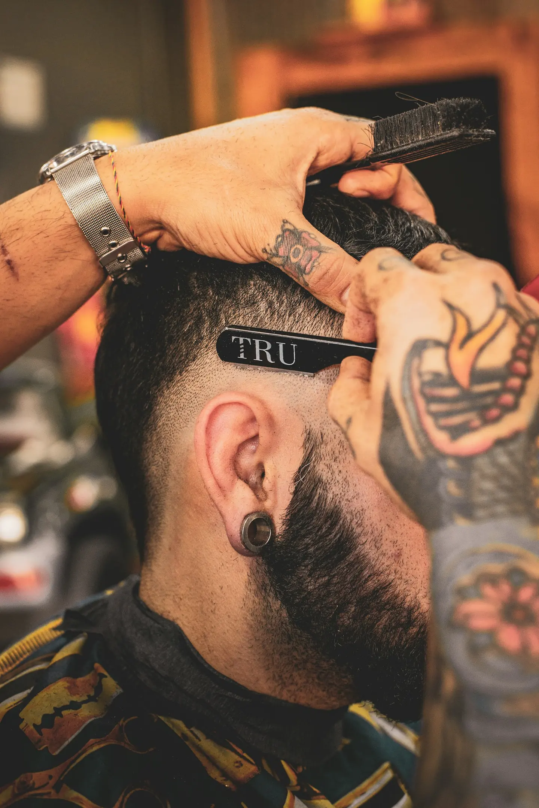
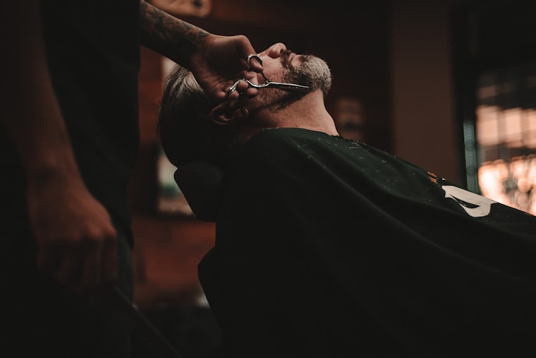
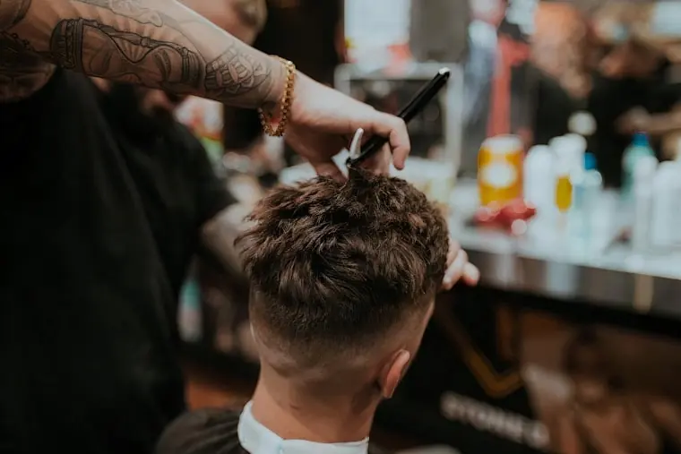
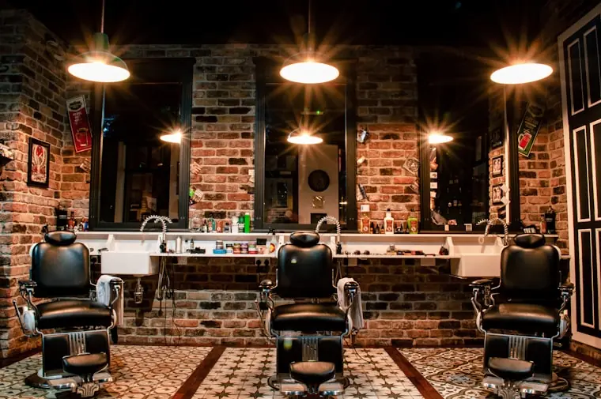

Corte clássico
Tesoura, máquina e acabamento na navalha.
R$ 55
Uma demonstração de como serviços, preços, horários e identidade visual podem ser organizados para apresentar uma barbearia com clareza.


Os dados abaixo são fictícios e servem apenas para demonstrar como o conteúdo de uma barbearia pode ser apresentado.
Tesoura, máquina e acabamento na navalha.
Pacote completo com toalha quente e finalização.
Contorno, hidratação e acabamento.
Camuflagem discreta para fios brancos.

A estrutura pode ser personalizada com a identidade, as fotografias, os serviços, os preços, os horários e as condições reais de cada barbearia.
Cores, tipografia e imagens alinhadas ao negócio.
Preços e descrições fáceis de consultar.
Chamadas claras para o WhatsApp comercial.
As fotografias são referências visuais desta demonstração e não representam um cliente real.

Na versão do cliente, esta área recebe os dados reais da barbearia.
Área ilustrativa · sem rastreamento
Uma landing page bem construída responde exatamente ao que o cliente procura antes mesmo do primeiro contato. Se algum dos pontos abaixo descreve o seu negócio, uma página dedicada faz diferença desde a primeira semana.
Clientes desistem quando precisam esperar resposta. Uma página com serviços, preços e botão de WhatsApp converte a procura em agendamento na hora.
Na página, os valores de corte, barba e pacotes ficam atualizados e consultáveis a qualquer momento, de qualquer celular.
Quem pesquisa por barbearia na sua cidade espera ver fotos do ambiente, serviços e contato imediato em um único lugar.
Perfil no Google e landing page são as primeiras informações que o cliente vê. Quem não aparece, perde o agendamento para quem aparece.
Serviço novo, horário estendido ou pacote especial passam a ter um endereço fixo para divulgação no Instagram e no WhatsApp.
Fale diretamente com Bruno e veja como adaptar esta estrutura aos serviços e à identidade do seu negócio.
Layout técnico, serviços organizados e caminho direto para solicitar informações.
Ver demonstração ↗Fotografia forte, menu objetivo e informações comerciais fáceis de localizar.
Ver demonstração ↗Apresentação de especialidades, áreas de atuação e orçamento pelo WhatsApp.
Ver demonstração ↗